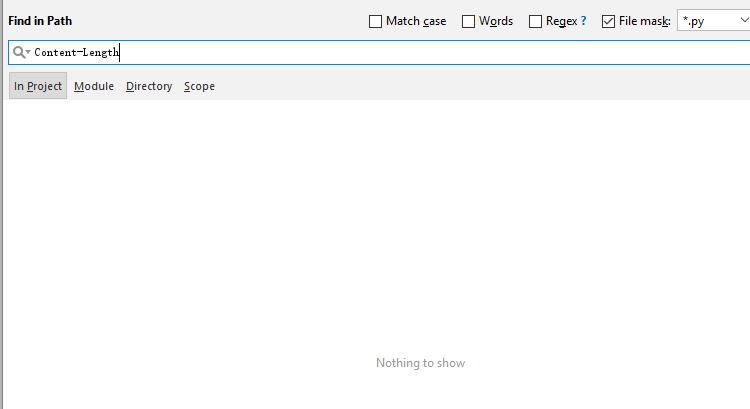
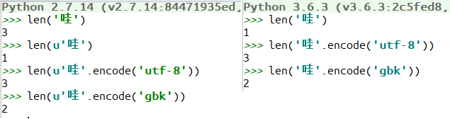
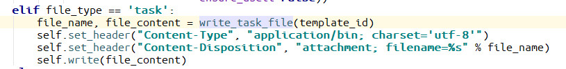
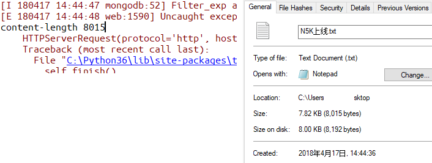
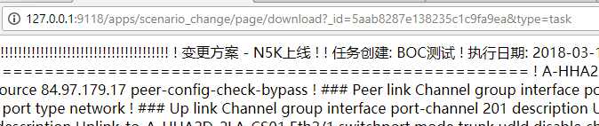
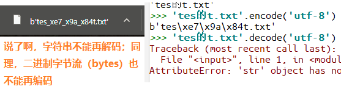
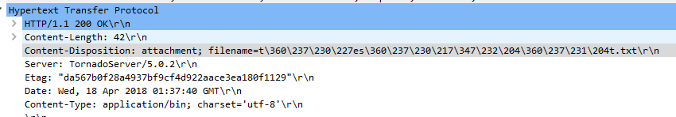
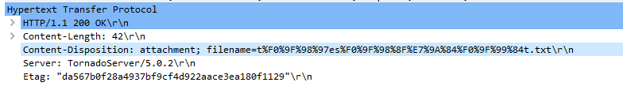
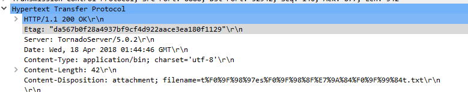

一次找不到错误的巨坑的http header的url编码的Python 3迁移问题
文章目录
起源
近期，我把一个Python 2 的项目迁移到了Python 3，今早在进行最后一次测试时，发现下载的一个按钮是失效的。当时立刻就想，完蛋了，难道是遇到了跨平台的问题？那就糟糕了啊，跨平台问题都不太好处理的。
试了下原来的Python 2版本的还正常，那么就是这次迁移有点小问题了。
确定复现
经过一系列绝望的瞎猫碰死耗子的尝试，发现了当要下载的文件是第三个，就会触发这个错误，抛的异常如下：
[E 180417 11:03:48 web:1590] Uncaught exception GET /apps/scenario_change/page/download?_id=5aab8287e138235c1c9fa9ea&type=task (127.0.0.1) HTTPServerRequest(protocol='http', host='127.0.0.1:9118', method='GET', uri='/apps/scenario_change/page/download?_id=5aab8287e138235c1c9fa9ea&type=task', version='HTTP/1.1', remote_ip='127.0.0.1', headers={'Host': '127.0.0.1:9118', 'Connection': 'keep-alive', 'Upgrade-Insecure-Requests': '1', 'User-Agent': 'Mozilla/5.0 (Macintosh; U; Intel Mac OS X 10.11; rv:54.0) Gecko/20100101 Firefox/54.0', 'Accept': 'text/html,application/xhtml+xml,application/xml;q=0.9,image/webp,image/apng,*/*;q=0.8', 'Dnt': '1', 'Referer': 'http://127.0.0.1:9118/apps/scenario_change/task_management.html', 'Accept-Encoding': 'gzip, deflate, br', 'Accept-Language': 'zh-CN,zh;q=0.9,en-US;q=0.8,en;q=0.7'}) Traceback (most recent call last): File "C:\Python36\lib\site-packages\tornado\web.py", line 1513, in _execute self.finish() File "C:\Python36\lib\site-packages\tornado\web.py", line 991, in finish self.flush(include_footers=True) File "C:\Python36\lib\site-packages\tornado\web.py", line 947, in flush start_line, self._headers, chunk, callback=callback) File "C:\Python36\lib\site-packages\tornado\http1connection.py", line 381, in write_headers lines.extend(l.encode('latin1') for l in header_lines) File "C:\Python36\lib\site-packages\tornado\http1connection.py", line 381, in lines.extend(l.encode('latin1') for l in header_lines) UnicodeEncodeError: 'latin-1' codec can't encode characters in position 45-46: ordinal not in range(256)[E 180417 11:03:48 web:1015] Cannot send error response after headers written[E 180417 11:03:48 web:1025] Failed to flush partial response Traceback (most recent call last): File "C:\Python36\lib\site-packages\tornado\web.py", line 1513, in _execute self.finish() File "C:\Python36\lib\site-packages\tornado\web.py", line 991, in finish self.flush(include_footers=True) File "C:\Python36\lib\site-packages\tornado\web.py", line 947, in flush start_line, self._headers, chunk, callback=callback) File "C:\Python36\lib\site-packages\tornado\http1connection.py", line 381, in write_headers lines.extend(l.encode('latin1') for l in header_lines) File "C:\Python36\lib\site-packages\tornado\http1connection.py", line 381, in lines.extend(l.encode('latin1') for l in header_lines) UnicodeEncodeError: 'latin-1' codec can't encode characters in position 45-46: ordinal not in range(256) During handling of the above exception, another exception occurred: Traceback (most recent call last): File "C:\Python36\lib\site-packages\tornado\web.py", line 1022, in send_error self.finish() File "C:\Python36\lib\site-packages\tornado\web.py", line 992, in finish self.request.finish() File "C:\Python36\lib\site-packages\tornado\httputil.py", line 419, in finish self.connection.finish() File "C:\Python36\lib\site-packages\tornado\http1connection.py", line 448, in finish self._expected_content_remaining) tornado.httputil.HTTPOutputError: Tried to write 8015 bytes less than Content-Length追踪异常1：白高兴
按照常理讲，咱代码出了异常，咱就定位到报错的最后一行（most recent call last嘛，最后一次调用），看下异常是什么知道个大概，然后跳过去，该回溯的回溯，管它是高级的打断点开debug还是低级的一顿print的，确定问题根源然后修改。
看一眼这个异常，Tried to write 8015 bytes less than Content-Length，看样子好像是指定了一个Content-Length但是实际上发送的文件却比这个短8015字节。莫非是迁移到3的过程中对Unicode与bytes应用了错误的len()导致抛异常？
那简单了，看一眼是不是设错了headers就好了啊，Edit - Find - Find in path，限定文件类型为py，开搜！

啥？逗我呢？没有？

'hello'是二进制（字节流 bytes），u'hello'才是Unicode；但是在3里呢，'hello'是Unicode，b'hello'才是二进制。唉，谁叫Python 问世（第一版发布于1991.02）的时候Unicode标准（1991.10）还没出来呢。以防你们不晓得这么个大坑，看下图：以后在有人跟你说一个汉字是两个字节，你就拿这个图怼死他：不说编码就说一个汉字是几个字节就是耍流氓，说了编码那也是耍流氓。追踪异常2：找到根源
有点扫兴，竟然没有Content-Length，那是因为啥呢？那就继续看着报错回溯呗。扫了一眼，啥，都是tornado的错，不是我的错？难道我要怀疑编译器解释器和久负盛名的tornado……？
for(int i=0;i++;i<10)，mian，ture，全角符号，以及<link href......又仔细看了一眼，发现这么一段话：During handling of the above exception, another exception occurred:
处理上面这个异常的时候，又来了个这么异常。
啊原来我刚刚看的是后来的异常啊，那我得看第一个异常的尾巴：
UnicodeEncodeError: 'latin-1' codec can't encode characters in position 45-46: ordinal not in range(256)
多少年了，无数的Python程序员都曾经被UnicodeEncodeError与UnicodeDecodeError坑的说不出话来。
可是依旧没有我的代码啊。
终于，通过搜索.txt（下载的文件的扩展名）我成功找到了这一行：
file_name = response['data'][0]['task_name'] + '.txt'看来是这句话负责生成文件名的，找到这句的函数定义，继续找调用者，叮咚！
一看函数名叫download，看样子下图这里就是该排错的地方

解决异常1：瞎比划
加个Content-Length
大致看了眼，好像没啥问题。要不在这里加上个Content-Length试试？
self.set_header("Content-Length", len(file_content.encode('utf-8')))
我的基础还是很牢固的，没算错，一点问题都没有，肯定没错啊。但是Tried to write 8015 bytes less than Content-Length这个异常还是抛了。
数据类型错了
也许是数据类型错了？说不定file_name, file_content需要字节流而不是字符串呢？这好像有点接近Unicode错误了。简单的encode('utf-8')一下，当然还是继续错啦。
也许是因为header的事情
那就把header都注释了看看。于是在浏览器里打开了文件……

那我只留Content-Type
噗(/≧▽≦)/我的文件名呢，内容是正确的。
啊，原来是靠的Content-Disposition这个响应头来强制浏览器下载文件，指定文件名什么的啊……
解决异常2：确定问题
终于，我确定了出错的代码在这一行
self.set_header("Content-Disposition", "attachment; filename=%s" % file_name)看样子是文件名。那就把filename替换成硬编码的test.txt，正常下载；再换成tes啊t.txt，一模一样的报错。
于是我果断的搜索了Content-Disposition encoding以及Content-Disposition 编码，看到这么一篇说得还挺有道理的文章：
Content-Disposition: attachment;filename="$encoded_fname";filename*=utf-8''$encoded_fname当然了我没看到下面那句话（读书要读全啊），直接套上了
self.set_header("Content-Disposition", "attachment; filename*=utf-8''%s" % file_name)当然继续报错啦。还是file_name数据类型不对？encode成UTF-8？差点用上decode（字符串怎么可能再decode嘛？必然要报错的）

噗，这倒真是tes的t.txt这个字符串的UTF-8编码。
这就纠结了，难道我要把文件名搞成什么ASCII的？比如干脆是几个真伪随机数吧？
解决异常3：解决
然后又找到了这么一篇例子丰富的文章，看到一半突然想起了，既然要给任意文字编码成ASCII字符集内的，那就用base64啊，但是浏览器又不懂base64没办法给还原回来啊……
唉？？不是有个东西叫URL编码吗？迅速翻了翻例子丰富的文章，还真提了一句……
from urllib.parse import quoteself.set_header("Content-Disposition", "attachment; filename=%s" % quote('tes的t.txt'))我爱emoji，emoji也爱我。???典型的傲娇受。
??? ??? ??? ??? ??? ??? ???
其实第一篇文章提了一句的：其中， $encoded_fname指的是将 UTF-8 编码的原始文件名按照 RFC 3986 进行百分号编码（percent encoding）后得到的。
百分号编码就是URL编码啦……
总结
这个小问题其实隐藏的还是很深的，而且奇特的是在Python 2没有问题但是到了3就冒出来了。
光看报错基本上没什么线索，只能靠对业务的熟悉摸索找到对应的代码，仔细排查最终确定导致出错的代码……然后解决之。
就我这水平啊，还是别怀疑编译器解释器，也别怀疑久负盛名的库了，绝对是我错了。
You tell me I'm wrong, then you'd better prove you're right. ——M.J.
后续
经过一小段时间的阅读源代码，在tornado源代码中发现了问题的根源。跟着我的节奏走！先看下抓包的结果吧：
Python 2未编码

Python 2 URL编码

Python 3 URL编码

我们知道问题是由set_header引起的，所以看一下set_header的源代码：
def set_header(self, name, value): # type: (str, _HeaderTypes) -> None """Sets the given response header name and value. If a datetime is given, we automatically format it according to the HTTP specification. If the value is not a string, we convert it to a string. All header values are then encoded as UTF-8. """ self._headers[name] = self._convert_header_value(value)非常清楚的看到调用了一个_convert_header_value()，继续追溯
def _convert_header_value(self, value): # type: (_HeaderTypes) -> str # Convert the input value to a str. This type check is a bit # subtle: The bytes case only executes on python 3, and the # unicode case only executes on python 2, because the other # cases are covered by the first match for str. if isinstance(value, str): retval = value elif isinstance(value, bytes): # py3 # Non-ascii characters in headers are not well supported, # but if you pass bytes, use latin1 so they pass through as-is. retval = value.decode('latin1') elif isinstance(value, unicode_type): # py2 # TODO: This is inconsistent with the use of latin1 above, # but it's been that way for a long time. Should it change? retval = escape.utf8(value) elif isinstance(value, numbers.Integral): # return immediately since we know the converted value will be safe return str(value) elif isinstance(value, datetime.datetime): return httputil.format_timestamp(value) else: raise TypeError("Unsupported header value %r" % value) # If \n is allowed into the header, it is possible to inject # additional headers or split the request. if RequestHandler._INVALID_HEADER_CHAR_RE.search(retval): raise ValueError("Unsafe header value %r", retval) return retval这段代码有点冗长，但实际上只做了一件事情，将传递过来的value转换为字符串，更进一步，在Python 2中，如果传过来的是'hello'，那么直接返回；如果类型是u'hello', 那么escape.utf8(value)。在Python 3中如果是'hello'那么直接返回，如果是'hello你'.encode('utf-8')，那么用latin1解码。
最终这段代码会保证返回的类型是对应Python 2/3的str类型。
但其实这段代码并没有什么错，不过确实写的有点难懂。
之后继续追溯到write_headers()，在http1connection.py的第380行左右：
if PY3: lines.extend(l.encode('latin1') for l in header_lines) else: lines.extend(header_lines)其中header_lines是一个生成器对象，包含了所有的headers，其类型为str（对应2/3的类型）
那么错误就显然易见了，在Python 3中对'hello'.encode('latin1')是没有任何问题的，但是'hello和'.encode('latin1')肯定会报UnicodeEncodeError啊，这也印证了我最开始发现的编码错误。
但是在Python 2，直接就走了下面extend进去了，自然也没问题了。
但是如果我们调用set_header时传递的参数是'hell你'.encode('utf-8')，那么在_convert_header_value中会被用latin1解码，在这里又使用latin1编码，又回到了utf-8编码之后的形态，所以自然会出现对应文件名的UTF-8编码，也印证了上面下载出来的乱码文件。
所以，如果要修复这个问题，要么我们保证只传递过来ASCII的文件名（进行URL编码），这样用latin1编码就不会错了。要么直接把这俩latin1改成utf-8。
Historically, HTTP has allowed field content with text in the
ISO-8859-1 charset [ISO-8859-1], supporting other charsets only
through use of [RFC2047] encoding. In practice, most HTTP header
field values use only a subset of the US-ASCII charset [USASCII].
Newly defined header fields SHOULD limit their field values to
US-ASCII octets. A recipient SHOULD treat other octets in field
content (obs-text) as opaque data.
这么做其实是有悖标准的，但是Python 2的版本直接不管不顾发出去了啊，实际上Python 2版本的应该拒绝这种headers的。我也很纠结，我也觉得没办法啊。
本站默认采用CC-BY-NC-SA 4.0协议进行授权 转载必须包含本声明，并以超链接形式注明原作者和本文原始地址


评论
4 条评论